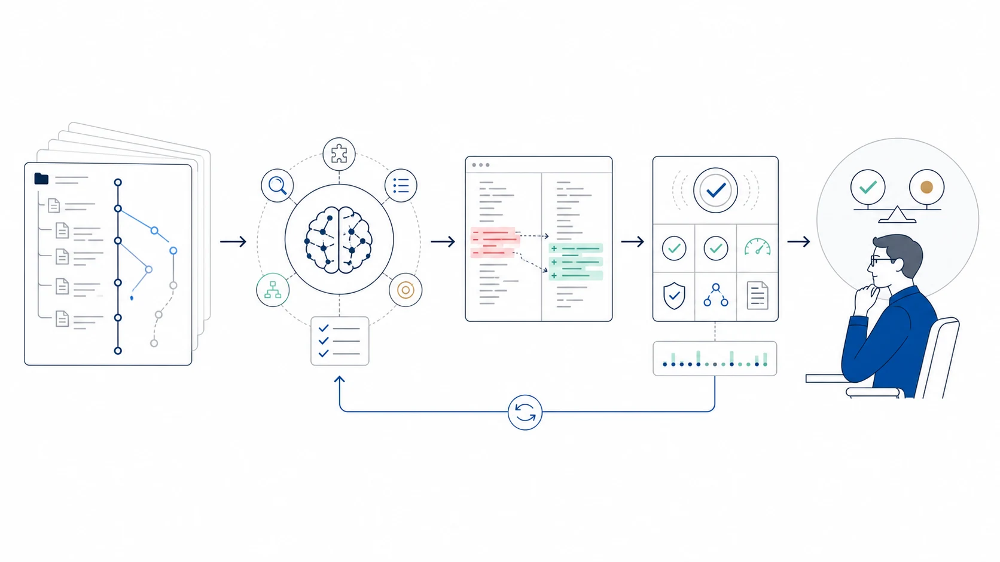

Research Notes
All views expressed here are my own.
Agents / Software Engineering
Thoughts on Coding Agents
Coding agents are becoming less like autocomplete tools and more like collaborators that can navigate and modify software systems. The harder questions now concern judgment, autonomy, evidence, understanding, and responsibility.

The important shift is not simply better code generation. It is the emergence of an inspect–act–verify loop in which an agent works inside a living software system.
Beyond Code Generation
A useful coding agent does more than produce a patch from a prompt. It inspects a repository, forms a plan, edits files, runs tools, observes failures, and revises its approach. Coding becomes a process of situated problem solving rather than a one-shot prediction task.
Context Is Part of the Problem
Most coding tasks depend on architecture, conventions, dependencies, tests, recent changes, and the intent behind existing code. Larger context windows help, but the harder problem is deciding what to inspect, what to remember, and what can be safely ignored. Repository understanding should therefore be treated as an active information-gathering policy.
Verification Should Be First-Class
Plausible code is not necessarily correct code. An agent should gather evidence through tests, static analysis, runtime observation, and direct comparison with the requested behavior. A central research question is not only whether an agent can write a patch, but whether it can determine when the task is genuinely complete.
Collaboration, Not Just Replacement
Coding agents may be most valuable when they make software work more legible: explaining unfamiliar systems, exposing assumptions, proposing alternatives, and lowering the cost of experimentation. Productive delegation should keep responsibility, uncertainty, and control visible to the person supervising the work.
Balancing Human Coding and Coding Agents
One question I have been thinking about and actively exploring is what the best balance should look like for the coder. I do not think it is a fixed percentage of code written by a person versus an agent. It is an adaptive allocation of attention and control: the human should remain closest to the decisions that shape the system, while the agent absorbs work that is inspectable, reversible, and well supported by evidence.
My current principle: optimize for leverage, not maximum delegation. Use the agent to expand capacity without surrendering understanding, judgment, or ownership.
Keep human-led
- Intent, problem framing, and acceptance criteria
- Architecture, abstractions, and difficult trade-offs
- Product taste, risk decisions, and final accountability
Delegate agent-forward
- Repository search and contextual summaries
- Routine implementation, refactoring, and alternative drafts
- Tests, static checks, documentation, and verification evidence
The operating rhythm I find most promising is: the human frames the problem and success criteria; the agent explores the repository and proposes options; the human selects the direction; the agent implements and verifies; and the human reviews both the diff and the evidence. That final review should update the coder's mental model, not merely approve a green test suite.
The balance should remain adaptive rather than settle into a permanent division of labor. Delegation can expand or contract with evidence and risk, but it should continue to preserve the coder's understanding and ability to take over.
A Broader Research Agenda
The themes below form a broader research agenda I currently see emerging around coding agents. They move from individual judgment and understanding to calibrated autonomy, independent verification, repository design, learning, and coordination across multiple agents.
Judgment & Understanding
The New Bottleneck Is Judgment
As code generation becomes cheaper, the scarce resource shifts from producing changes to deciding which changes deserve trust.
An agent can propose several implementations, tests, and refactors in the time it takes me to examine one carefully. Progress is therefore limited less by typing or searching and more by framing the right problem, comparing alternatives, noticing hidden assumptions, and deciding what evidence is enough. More output can even slow a team when it creates a review queue that exceeds human attention. I am interested in interfaces that compress the decision space rather than merely expand code volume: surface trade-offs, rank uncertainties, and present the smallest decisive evidence. The goal should be a higher rate of sound, explainable decisions per unit of human judgment—not maximum agent throughput.
Comprehension Debt
When software changes faster than maintainers can update their mental models, velocity quietly accumulates comprehension debt.
Agent-generated code can pass every test and still leave me less able to explain the system than before. I think of this gap as comprehension debt: the difference between what the codebase does and what its maintainers genuinely understand. Like technical debt, it may remain invisible until a failure, handoff, or architectural change demands knowledge that was never absorbed. Signals include approving diffs from summaries, repeatedly asking the agent to rediscover the same context, or being unable to predict the impact of a small change. I want to study whether explanation quality, prediction accuracy, and the ability to recover key context without the agent can serve as early indicators before this debt becomes operationally expensive.
Learning Mode and Production Mode
The workflow that maximizes delivery is not always the one that develops expertise.
In learning mode, useful friction should remain: I may predict the solution before asking, implement a critical path manually, request explanations instead of patches, or compare my approach with the agent's. The objective is not immediate throughput but a stronger mental model, transferable skill, and the ability to recognize when an answer is subtly wrong. In production mode, I may delegate more repository search, routine implementation, testing, and documentation when the task is well specified and verifiable. Even then, speed should not remove ownership or meaningful review. I am interested in interfaces that make the mode explicit and adjust the agent's behavior accordingly.
Autonomy, Boundaries & Responsibility
Autonomy Must Be Earned
Agent autonomy should be a graduated capability supported by accumulated evidence, not a blanket setting granted by confidence or convenience.
Explain → Plan → Draft → Edit → Test → Merge → Deploy
Moving upward expands both the scope and consequence of action, so each transition should have an evidence gate. An agent that reliably explains context may be allowed to propose plans; one that produces small, reviewable patches and catches failures may earn editing and testing privileges. Merge or deployment should require stronger guarantees: stable tests, bounded permissions, complete logs, monitoring, and a credible rollback path. Autonomy should also be reversible. A surprising action, repeated verification failure, or move into an unfamiliar subsystem should take the agent down the ladder. This could make trust operational: a changing relationship between demonstrated capability, task risk, and available safeguards.
When Should an Agent Interrupt the Human?
A capable coding agent needs a stopping policy: it should know when continued autonomy is more costly than a focused human decision.
Interrupting too often turns the agent into a slow command-line assistant; interrupting too late lets a small misunderstanding become an expensive branch of work. I think interruption should be triggered not by uncertainty alone, but by uncertainty multiplied by consequence and irreversibility. The agent should pause when requirements admit materially different interpretations, a new core abstraction is needed, permissions must expand, sensitive or production data may be affected, or available tests cannot distinguish success from a plausible failure. A good interruption should be economical: explain what changed, why it matters, present the smallest set of viable options, and ask for one decision.
When Not to Use a Coding Agent
Knowing when not to delegate is part of using coding agents well.
I would hesitate to delegate execution when the objective is fundamentally unclear, an action is difficult to reverse, a task touches sensitive data without appropriate isolation and auditable access controls, or there is no reliable way to test the result. I would also limit delegation when understanding the implementation is itself the goal—for example, while learning a foundational concept or taking ownership of an unfamiliar critical subsystem. This does not always mean excluding the agent. It may still map the repository, identify risks, ask questions, or propose alternatives while leaving implementation to the human. My current boundary is simple: if I cannot define the intended outcome, inspect consequential decisions, or recover safely from failure, the agent should remain advisory.
Responsibility Must Follow Control
Accountability is credible only when it is matched by meaningful decision rights, visibility, and the ability to intervene.
As coding agents move from suggesting code to editing files, running commands, and potentially shipping changes, responsibility becomes harder to locate. My current view is that responsibility should follow decision rights, control, and visibility. If a person is expected to answer for an outcome, that person must also have a meaningful ability to shape the task, constrain the agent, inspect consequential actions, and stop or reverse the work.
An agent may be the immediate actor that introduces a change, but action is not the same as accountability. Accountability remains layered across the people and organizations that frame the task, grant permissions, design safeguards, review the evidence, and decide to merge or deploy. This avoids both the convenient excuse that “the agent did it” and the opposite fiction that one final reviewer can personally own every failure created by a wider system of tools, incentives, and controls.
- Frame
- The requester or product owner owns the objective, constraints, and acceptance criteria.
- Authorize
- The person or team granting tools and permissions owns the autonomy level and risk boundary.
- Release
- A named maintainer owns the merge or deployment decision and the evidence accepted.
- Respond
- The team and organization own rollback, incident response, remediation, and learning.
Simply saying “the human remains responsible” is not enough if oversight is ceremonial—if the agent works too quickly to inspect, important actions are poorly logged, the reviewer lacks relevant context, or rejecting the change is unrealistic. Greater agent autonomy should therefore come with stronger provenance, observability, escalation, and rollback. Model and tool builders also retain responsibility for predictable system-level failures and missing safeguards. The goal is not merely to decide whom to blame after failure, but to make ownership, evidence, and recovery paths explicit before the agent acts.
Verification & Evaluation
Do Not Let the Agent Grade Its Own Homework
Verification is weakest when implementation and evaluation share the same assumptions, context, and incentives.
If one agent interprets the task, writes the patch, creates the tests, and declares success, a mistaken premise can propagate through the entire loop. The issue is not dishonesty; it is correlated error. Tests may encode the same narrow reading that shaped the implementation, while a polished summary makes internal consistency look like correctness. Consequential changes need some independence between builder and verifier: an external test oracle, a second agent given only the specification, property-based or adversarial checks, or a human reviewing failure modes rather than only the diff. Independence need not duplicate every task; it should increase with ambiguity and consequence. A useful verifier should actively seek disconfirming evidence.
Measure the Whole System, Not Code Output
Coding agents should be evaluated by reliable outcomes, including the human work and downstream costs required to achieve them.
Tokens generated, tasks closed, and time to first patch can reward activity while hiding review burden, rework, escaped defects, brittle abstractions, and declining human understanding. A patch produced in minutes is not efficient if it takes hours to validate or creates maintenance costs later. A more useful unit is the complete human–agent system. I would want to track time to trustworthy evidence, human review effort, correction and rollback rates, maintainability, and whether the coder can still explain the resulting design. These measurements are context-dependent, but that is part of the research problem. The goal is dependable progress with an acceptable cognitive and operational cost.
Engineering & Coordination
Agent-Ready Software Engineering
A repository that an agent can work in safely is usually also one that humans can understand, test, and recover.
This is the engineering response to the earlier context problem. I increasingly think agent readiness should be treated as a software quality, not merely a property of the model. An agent performs better when a repository has explicit setup instructions, discoverable commands, stable tests, clear module boundaries, typed interfaces, short feedback loops, and conventions that can be inspected rather than guessed. These properties also help a new human contributor. An agent-ready repository should make the safe path easy: permissions are scoped, destructive actions are separated, tests produce useful evidence, and rollback is routine. Instead of expecting the agent to infer every unwritten norm, we can improve the environment in which it reasons.
From One Agent to Many
Multiple agents increase coordination demands as well as capacity, so parallelism needs explicit ownership, isolation, and integration.
More agents do not automatically mean more progress. They may inspect the same files, make incompatible assumptions, duplicate work, or produce individually reasonable changes that fail when combined. The human supervisor can then become an integration and attention bottleneck. I am interested in shared task models, explicit ownership of files or interfaces, isolated workspaces, visible dependencies, and checkpoints before changes are merged. Agents may also take distinct implementation, verification, and integration roles without assuming that role separation alone guarantees independence. The deeper question is how to gain parallel capacity without losing a coherent system model, trustworthy evidence, or traceable responsibility.
Open Research Questions
- How can comprehension debt and long-term skill retention be measured before a failure or handoff reveals the gap?
- What evidence, risk, and reversibility conditions should move an agent up or down an autonomy ladder?
- How independent should builder and verifier be at different levels of ambiguity and consequence?
- Which repository properties make human–agent work reliably maintainable rather than merely easy to generate?
- How should evaluation combine delivery speed, review cost, escaped defects, maintainability, and human learning?
- How can multiple agents coordinate while preserving coherent context, decision rights, and accountability?